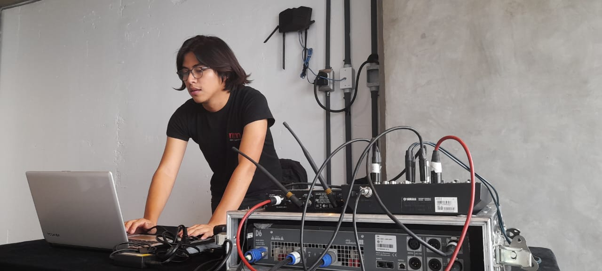

¿Quien es Eduardo Diaz?

Educación y trayectoria
Empecé estudiando historia en la Facultad de filosofia y letras de la UNAM, Sin embargo, en el camino, descubrí que no era mi verdadera vocación. Fue un momento de introspección que me llevó a buscar mi verdadera profesión. Fue entonces cuando recordé un pequeño gusto por la programación que había adquirido durante mis días de preparatoria y decidí explorarlo. Tomé cursos en la Escuela de Código de los Pilares en la Ciudad de México, donde aprendí fundamentos de programación, despues tomé un paso decisivo al entrar al bootcamp de Generation México, donde desarrollé habilidades prácticas y profundice en el desarrollo web. Posteriormente obtuve una certificación como backend impartido por Alura de la mano con Oracle. Me dedico al aprendizaje autodidacta y estoy constantemente explorando nuevas tecnologías y desafíos en el campo de la programación.
Proyectos